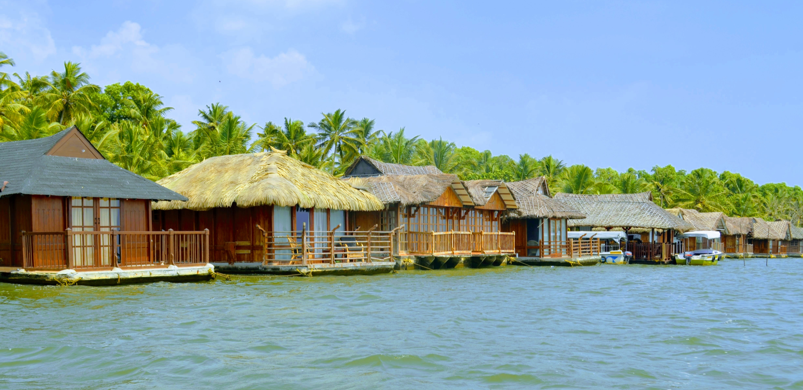
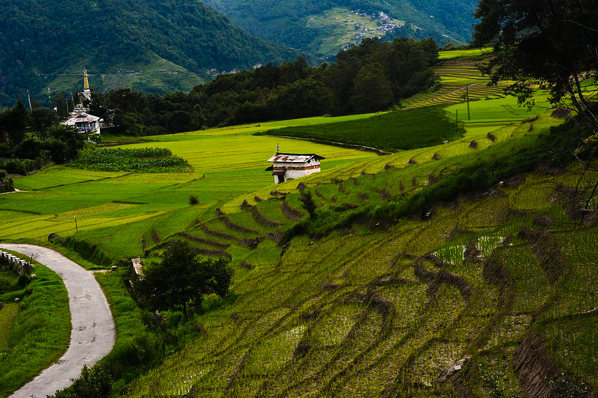
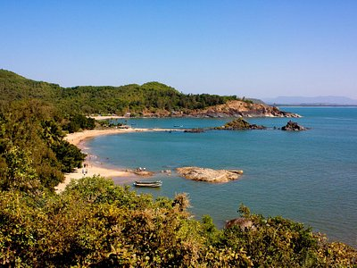

In a world that seems to grow smaller with each passing day, the allure of hidden gems and unexplored destinations beckons to the intrepid traveler. Beyond the well-trodden paths of popular tourist spots lie treasures waiting to be discovered. This blog embarks on a journey into the heart of travel tales, inviting you to explore the magic of hidden gems and the charm of destinations yet to be fully embraced by the wandering soul.
1. Poovar - Kerala's Tranquil Backwater Haven

Escape the crowds and immerse yourself in the serene beauty of Poovar, a hidden gem nestled in the heart of Kerala's backwaters. This picturesque village is a paradise of lush greenery, tranquil lagoons, and pristine beaches. Navigate through the intricate network of canals on a traditional houseboat, bask in the golden sunsets, and witness the harmonious coexistence of river, sea, and backwaters. Poovar is a haven for those seeking a rejuvenating escape from the chaos of modern life.
2. Ziro - A Slice of Paradise in Arunachal Pradesh

Discover a world of surreal landscapes and indigenous cultures in Ziro, another hidden treasure in Arunachal Pradesh. Surrounded by rolling hills and rice fields, Ziro Valley is a place of unspoiled beauty and a stronghold of the Apatani tribe. Immerse yourself in their unique customs, witness the mesmerizing Apatani way of rice cultivation, and explore the vibrant markets filled with traditional crafts. Ziro offers an authentic and immersive experience that transcends the typical tourist trail.
3. Gokarna - Karnataka's Beachfront Secret

Move over Goa, there's another coastal paradise waiting to be explored – Gokarna. Tucked away in Karnataka, this charming town offers a more relaxed and serene beach experience. With its pristine shores, dramatic cliffs, and a spiritual ambiance, Gokarna is a haven for beach lovers and soul seekers alike. Whether you're seeking tranquility on the beaches or embarking on a pilgrimage to its revered temples, Gokarna promises a rejuvenating escape from the ordinary.